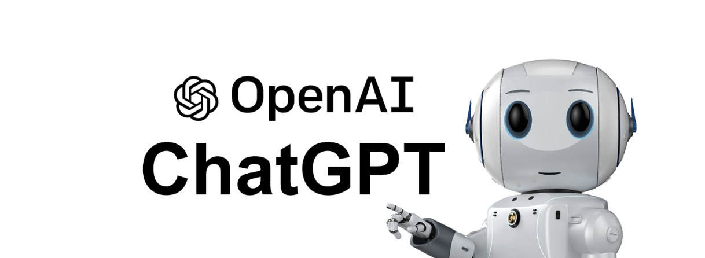
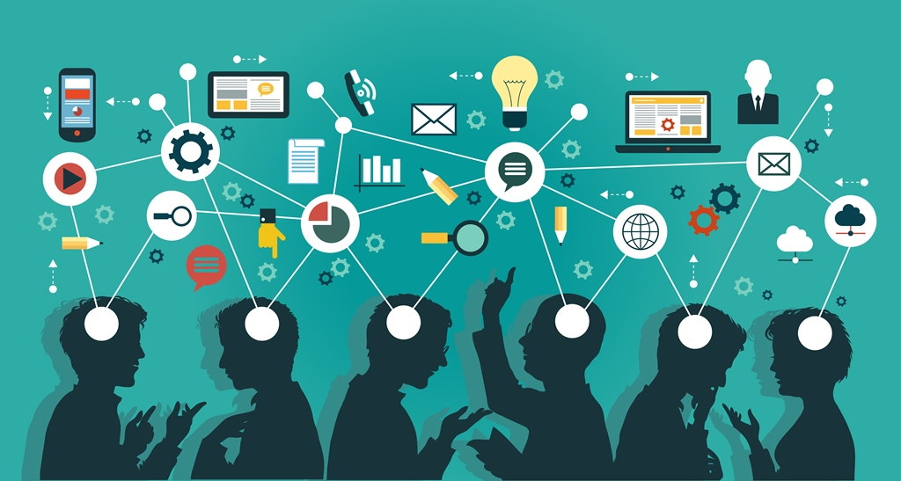
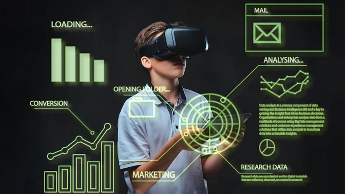
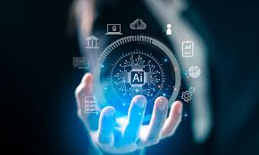

Conceptos, aplicaciones, historia e impacto social
La inteligencia artificial (IA) es una disciplina de la informática que busca crear sistemas capaces de realizar tareas que requieren inteligencia humana, como aprender, razonar, resolver problemas y tomar decisiones.
Según IBM, la IA combina grandes volúmenes de datos con algoritmos inteligentes para permitir que las máquinas aprendan de la experiencia.
El término inteligencia artificial fue propuesto en 1956 por John McCarthy durante la Conferencia de Dartmouth. Desde entonces, la IA ha pasado por diferentes etapas de avance y estancamiento.
La inteligencia artificial puede clasificarse según su capacidad:
| Tipo | Descripción |
|---|---|
| IA Débil | Especializada en tareas específicas |
| IA General | Capaz de razonar como un humano |
| IA Superinteligente | Supera la inteligencia humana |
La IA tiene aplicaciones en numerosos sectores, transformando la manera en que se realizan tareas cotidianas.


A pesar de sus beneficios, la inteligencia artificial plantea desafíos relacionados con la privacidad, la seguridad de los datos y la automatización del empleo.El uso responsable de la IA requiere regulaciones, transparencia y una ética tecnológica sólida.

En el futuro, la IA continuará evolucionando e integrándose en más aspectos de la vida humana, desde ciudades inteligentes hasta avances científicos.El desafío será equilibrar innovación tecnológica con bienestar social.
IBM. (2023). What is artificial intelligence?. Recuperado de https://www.ibm.com/topics/artificial-intelligence
Russell, S., & Norvig, P. (2021). Artificial Intelligence: A Modern Approach. Pearson Education.
OpenAI. (2023). Research and deployment of artificial intelligence. Recuperado de https://openai.com
Las experiencias de uso en tecnología influyen directamente en la vida cotidiana.
El uso frecuente de redes sociales puede generar conexión social.
También puede causar dependencia y ansiedad.
Más información sobre redes socialesLos videojuegos pueden mejorar habilidades cognitivas.
Sin embargo, el uso excesivo puede afectar el rendimiento académico.
Más información sobre videojuegosLas compras en línea facilitan el acceso a productos.
Pero pueden fomentar el consumismo impulsivo.
Más información sobre comercio electrónicoLa educación virtual permite estudiar desde cualquier lugar.
Puede generar aislamiento si no se equilibra con interacción social.
Más información sobre educación en líneaLas apps de salud ayudan a monitorear hábitos saludables.
Un mal uso puede generar obsesión por los datos.
Más información sobre salud digitalEl teletrabajo ofrece flexibilidad laboral.
Puede causar dificultad para separar vida personal y trabajo.
Más información sobre teletrabajo
La inteligencia artificial optimiza procesos y tareas.
También genera debates éticos y laborales.
Más información sobre inteligencia artificialEl streaming facilita el acceso a entretenimiento.
El consumo excesivo puede afectar el sueño.
Más información sobre streamingLas experiencias de uso pueden ser positivas o negativas.
El equilibrio es clave para evitar consecuencias perjudiciales.

La realidad virtual ofrece experiencias inmersivas.
Puede utilizarse en educación, medicina y entretenimiento.
El uso prolongado puede causar fatiga visual.
Más información sobre realidad virtual
La banca digital permite gestionar finanzas desde el móvil.
Reduce la necesidad de acudir físicamente a una sucursal.
Existe riesgo de fraudes si no se toman precauciones.
Más información sobre banca en línea
Los foros permiten compartir conocimientos y experiencias.
Fomentan el aprendizaje colaborativo.
Pueden propagar desinformación si no se verifica la fuente.
Más información sobre foros en Internet
Las aplicaciones de transporte facilitan la movilidad urbana.
Permiten calcular rutas y tiempos estimados.
Dependencia tecnológica en caso de fallos del sistema.
Más información sobre aplicaciones móviles
La seguridad digital protege datos personales.
El uso de contraseñas seguras es fundamental.
La falta de protección puede causar robo de identidad.
Más información sobre seguridad informáticaLa tecnología transforma nuestras experiencias diarias.
El uso responsable permite maximizar beneficios.
La educación digital es clave para evitar consecuencias negativas.
Adoptar hábitos saludables mejora la experiencia tecnológica.
El futuro digital dependerá de decisiones conscientes.
La inteligencia artificial (IA) se ha convertido en una de las tecnologías más influyentes del siglo XXI. Actualmente millones de personas utilizan sistemas inteligentes para estudiar, trabajar, crear contenido o resolver problemas.
Diversos estudios indican que el uso de herramientas de IA crece rápidamente, especialmente entre jóvenes y profesionales del sector tecnológico.
Según estudios internacionales, más de un tercio de la población de países desarrollados ya utiliza herramientas de inteligencia artificial en su vida diaria.
El crecimiento de estas tecnologías ha provocado cambios importantes en la educación, la economía y el mercado laboral.
| Grupo de Edad | Porcentaje de Usuarios | Uso Principal | Frecuencia |
|---|---|---|---|
| 16-24 | 63.8% | Educación | Alta |
| 25-34 | 29.8% | Trabajo | Alta |
| 35-44 | 18.9% | Trabajo | Media |
| 45-54 | 13.8% | Asistencia | Media |
| 55-64 | 8.8% | Información | Baja |
| 65+ | 5.1% | Asistencia | Baja |
| País | Usuarios (%) | Sector Principal | Nivel de adopción |
|---|---|---|---|
| Estados Unidos | 15.1% | Tecnología | Alto |
| India | 9.4% | Educación | Alto |
| Brasil | 5.3% | Marketing | Medio |
| Reino Unido | 4.3% | Negocios | Medio |
| Indonesia | 3.9% | Educación | Medio |
| Otros países | 61.8% | Variado | Variable |
Los jóvenes son los principales usuarios de inteligencia artificial. Esto se debe a su mayor acceso a internet, educación digital y adaptación a nuevas tecnologías.
En universidades y escuelas, la IA se utiliza para:
En el ámbito laboral, las empresas utilizan inteligencia artificial para mejorar la eficiencia, automatizar procesos y analizar grandes cantidades de datos.
Los sectores donde más se utiliza la IA incluyen:
Sin embargo, también existen desafíos importantes como la privacidad, la ética y el posible reemplazo de ciertos empleos.
La inteligencia artificial seguirá creciendo en los próximos años. Los países que inviertan en educación tecnológica tendrán mayores beneficios económicos y sociales.
Además, será fundamental enseñar a las nuevas generaciones a utilizar la IA de manera responsable y ética.
Explorando qué nos espera con la IA
La inteligencia artificial se ha convertido en una de las tecnologías más influyentes del siglo XXI.
Desde asistentes virtuales hasta sistemas capaces de diagnosticar enfermedades, la IA está cambiando la forma en que vivimos.
Muchas personas se preguntan qué nos espera con esta tecnología.
¿Será realmente prometedora?
¿Cambiará el mundo para mejor?
Actualmente la IA se utiliza en múltiples áreas como medicina, transporte, educación y entretenimiento.
Las empresas invierten miles de millones en su desarrollo.
Esto indica que la tecnología continuará creciendo durante las próximas décadas.
El avance de los algoritmos y el aumento del poder computacional han permitido que los sistemas de IA aprendan más rápido.
Esto abre nuevas oportunidades que hace apenas unos años parecían ciencia ficción.
La inteligencia artificial ya está influyendo en nuestra vida diaria.
Los motores de recomendación sugieren películas, música y productos.
Los asistentes de voz ayudan a responder preguntas y controlar dispositivos.
En las ciudades inteligentes, la IA puede optimizar el tráfico.
También puede mejorar la gestión energética.
En el sector de la salud, la IA permite analizar imágenes médicas.
Esto puede ayudar a detectar enfermedades de forma más temprana.
Los investigadores creen que la IA también puede ayudar a enfrentar problemas globales.
Por ejemplo el cambio climático.
Los modelos predictivos pueden analizar grandes cantidades de datos ambientales.
Uno de los temas más debatidos es el impacto en el empleo.
Algunas tareas repetitivas podrían ser automatizadas.
Esto podría reemplazar ciertos trabajos.
Sin embargo también se crearán nuevas profesiones.
Especialistas en IA.
Ingenieros de datos.
Expertos en ética tecnológica.
Históricamente las revoluciones tecnológicas han transformado el mercado laboral.
La clave será adaptarse y desarrollar nuevas habilidades.
La educación tendrá un papel fundamental.
Las escuelas y universidades deberán preparar a los estudiantes para trabajar con tecnología avanzada.
Aunque la IA es prometedora, también presenta riesgos.
Uno de los principales desafíos es el uso responsable de la tecnología.
La privacidad de los datos es una preocupación importante.
Muchos sistemas dependen de grandes cantidades de información personal.
También existe el problema del sesgo en los algoritmos.
Si los datos utilizados para entrenar una IA son sesgados, las decisiones del sistema también pueden serlo.
Otro tema es la regulación.
Los gobiernos están comenzando a crear leyes para asegurar el uso ético de la IA.
En el futuro veremos sistemas de IA aún más avanzados.
Podrían colaborar con humanos en tareas complejas.
Desde investigación científica hasta exploración espacial.
La combinación de IA con otras tecnologías será clave.
Por ejemplo la robótica.
La computación cuántica.
Y el internet de las cosas.
Esto podría generar avances increíbles en productividad y descubrimientos científicos.
La inteligencia artificial tiene el potencial de transformar profundamente nuestra sociedad.
Puede mejorar la calidad de vida.
Impulsar la innovación.
Y resolver problemas complejos.
Sin embargo su desarrollo debe ser responsable.
La ética y la regulación serán fundamentales.
En resumen, la IA es una tecnología prometedora.
Pero su impacto dependerá de cómo la utilicemos como sociedad.
Si se desarrolla correctamente, el futuro con inteligencia artificial podría ser uno de los avances más importantes en la historia de la humanidad.
La ciberseguridad protege sistemas, redes y datos frente a ataques.
Es fundamental en un mundo conectado.
Las amenazas digitales crecen constantemente.
Empresas y usuarios deben proteger su información.
Los ataques pueden causar pérdidas económicas y afectar la privacidad.
Existen amenazas como malware y phishing.
La prevención es clave mediante contraseñas seguras y actualizaciones.
Los firewalls y antivirus ayudan a proteger sistemas.
La educación digital es importante para evitar riesgos.
La inteligencia artificial también se usa en seguridad.
Puede detectar patrones sospechosos.
La seguridad es responsabilidad compartida.
Blockchain es un registro digital descentralizado.
Permite almacenar datos de forma segura.
Se basa en bloques enlazados.
Cada bloque contiene información.
Es transparente y difícil de alterar.
Se usa en criptomonedas y contratos inteligentes.
Elimina intermediarios y mejora la confianza digital.
Se aplica en finanzas, logística y sistemas de votación.
Reduce fraudes y mejora la trazabilidad.
Su adopción sigue creciendo.
El consumo energético es uno de sus desafíos.
El IoT conecta dispositivos a internet.
Permite comunicación entre objetos.
Se usa en hogares inteligentes y ciudades.
Los dispositivos recopilan y analizan datos.
Mejora la eficiencia y automatización.
Se aplica en salud, transporte y agricultura.
Presenta riesgos de seguridad.
La protección de datos es fundamental.
El futuro del IoT es prometedor.
La computación cuántica es una tecnología avanzada.
Utiliza principios de la física cuántica.
Los bits cuánticos se llaman qubits.
Pueden representar múltiples estados.
Permite resolver problemas complejos.
Supera a computadoras tradicionales.
Se usa en ciencia, criptografía y simulaciones.
Aún está en desarrollo.
Requiere condiciones extremas.
Podría revolucionar la informática.
El Big Data se refiere a grandes volúmenes de datos.
Estos datos crecen rápidamente.
Se generan constantemente.
Las empresas los analizan.
Permiten tomar decisiones.
El análisis de datos es clave.
Se usan algoritmos para identificar patrones.
Se aplica en marketing, salud y educación.
Mejora la eficiencia y reduce costos.
La privacidad es un reto importante.
La ética en el manejo de datos es fundamental.
La robótica combina ingeniería y tecnología.
Permite crear máquinas inteligentes.
Los robots realizan tareas.
Se usan en industria, medicina y hogares.
Automatizan procesos y aumentan la productividad.
Permiten realizar tareas peligrosas.
La inteligencia artificial mejora su funcionamiento.
Interactúan con humanos.
Su desarrollo continúa avanzando.
El futuro es prometedor.